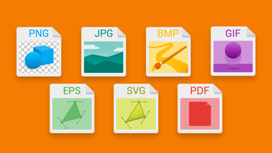
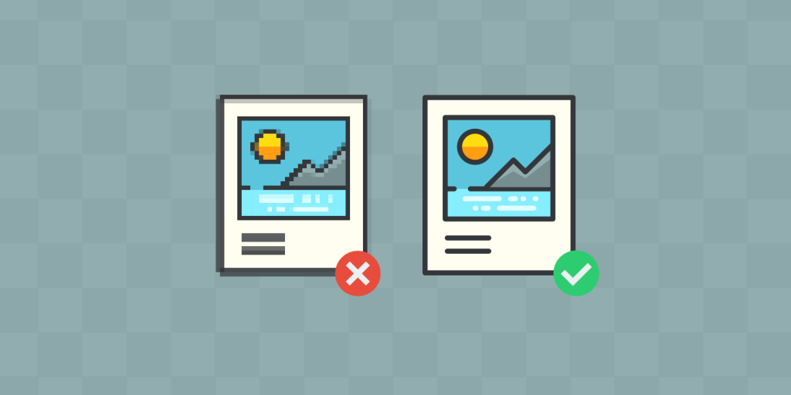
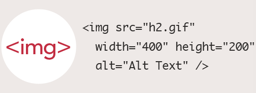

Tema 5: Imágenes para la Web
1.Tipos de imágenes. Vectoriales y mapa de bits

Una imagen vectorial es una imagen digital formada por objetos geométricos dependientes, cada uno de ellos definido por atributos matemáticos de forma, de posición, etc. Por ejemplo un círculo de color rojo quedaría definido por la posición de su centro, su radio, el grosor de línea y su color.
Una imagen en mapa de bits, imagen ráster o imagen de píxeles es una estructura o fichero de datos que representa una rejilla rectangular de píxeles o puntos de color, denominada matriz, que se puede visualizar en un monitor, papel u otro dispositivo de representación.
2.Formatos de imágenes
Un concepto y expresión que usamos al hablar de imágenes es el de tamaño. Este término puede ocasionar confusión ya que solemos emplearlo para cosas diferentes: normalmente decimos que una imagen tiene un tamaño de 13 x 18 cm o 1024 x 768 píxeles, pero también decimos que una imagen tiene un tamaño de 3 Mbytes. Este uso impreciso de la palabra no suele causar mayores problemas, pero para los objetivos del curso sí que es importante matizar, ya que son dos características diferentes de una imagen.
JPG es un tipo de archivo que fue desarrollado por el Joint Photographic Experts Group (JPEG) para que fuese el estándar para las imágenes hechas por fotógrafos. Para que el JPG tenga un tamaño reducido, el archivo comprime los datos de la imagen en bloques de píxeles, también conocidos como “mosaico”.
GIF también es un tipo de archivo de imagen que tienen bastante tiempo siendo usado, aunque fue casi olvidado por un tiempo, ha vuelto a ser muy popular recientemente. Sus siglas significan Graphics Interchange Format.
PNG significa Portable Network Graphics, aunque algunos también le llaman PNG-not_GIF. Este segundo nombre indica que fue desarrollado como una alternativa al GIF. Este también soporta transparencias, así que es muy bueno para usarlo en Internet y en navegadores.
3.Software para procesar imágenes

Photoshop permite modificar imágenes y fotografías digitalizadas. Es una herramienta ampliamente reconocida por su uso en la creación y edición de imágenes como gráficos o logotipos; en esta puedes manipular aspectos de tus fotografías tales como la luz, el color, la forma, el fondo, etc.
GIMP lee y escribe la mayoría de los formatos de ficheros gráficos, entre ellos; JPG, GIF, PNG, PCX, TIFF, bmp, pix y también la mayoría de los psd (de Photoshop) además de poseer su propio formato abierto de almacenamiento de ficheros, el XCF. Es capaz también de importar y exportar ficheros en pdf y postcript (ps).
4.Optimización de imágenes para la web
Las imágenes grandes ralentizan tu página web lo cual crea una experiencia del usuario inferior. La optimización de imágenes es el proceso de disminuir el tamaño de tu archivo mediante el uso de un plugin o script el cual en cambio acelera el tiempo de carga de tu página. Compresión con o sin pérdida son los dos métodos comúnmente utilizados.
La resolución de una imagen es el número de píxeles por pulgada que contiene (1 pulgada = 2,54 centímetros). Ésta se expresa en PPP (puntos por pulgada en español) o DPI (dots per inch en inglés). ... Por lo general, se considera que una resolución de 300 ppp para una imagen es más que suficiente antes de la impresión.
La profundidad de color o bits por píxel (bpp) es un concepto de la computación gráfica que se refiere a la cantidad de bits de información necesarios para representar el color de un píxel en una imagen digital o en un framebuffer.
5.Herramientas de optimización de imágenes
Pixlr Editor: es su herramienta de edición de imágenes por excelencia. Gracias a ella podrás realizar multitud de acciones sobre tus imágenes como por ejemplo: modificar el tamaño, rotarlas, recortarlas, alterar el brillo y la saturación etc
Otra opción sin lugar a dudas excelente es Gimp un software gratuito que te permitirá fácilmente retocar tus imágenes logrando resultados más que satisfactorios.
6.Inclusión de imágenes en la web. Etiqueta img
Las imágenes de contenido son las que proporcionan información y complementan la información textual. Las imágenes de adorno son las que se utilizan para hacer bordes redondeados, para mostrar pequeños iconos en las listas de elementos, para mostrar fondos de página, etc Las primeras se incluyen en la web mediante la etiqueta img, y las segundas mediante CSS.
Reconocimiento - No Comercial (by-nc)
Los atributos más importantes para son:
alt : para cuando la imagen no cargue aparezca este texto
src : indica la ruta donde esta la imagen ya sea con ruta relativa o absoluta
width : indica el ancho de la imagen
height : indica el alto de la imagen
title : indica el título de la imagen cuando pasamos por encima de ella.